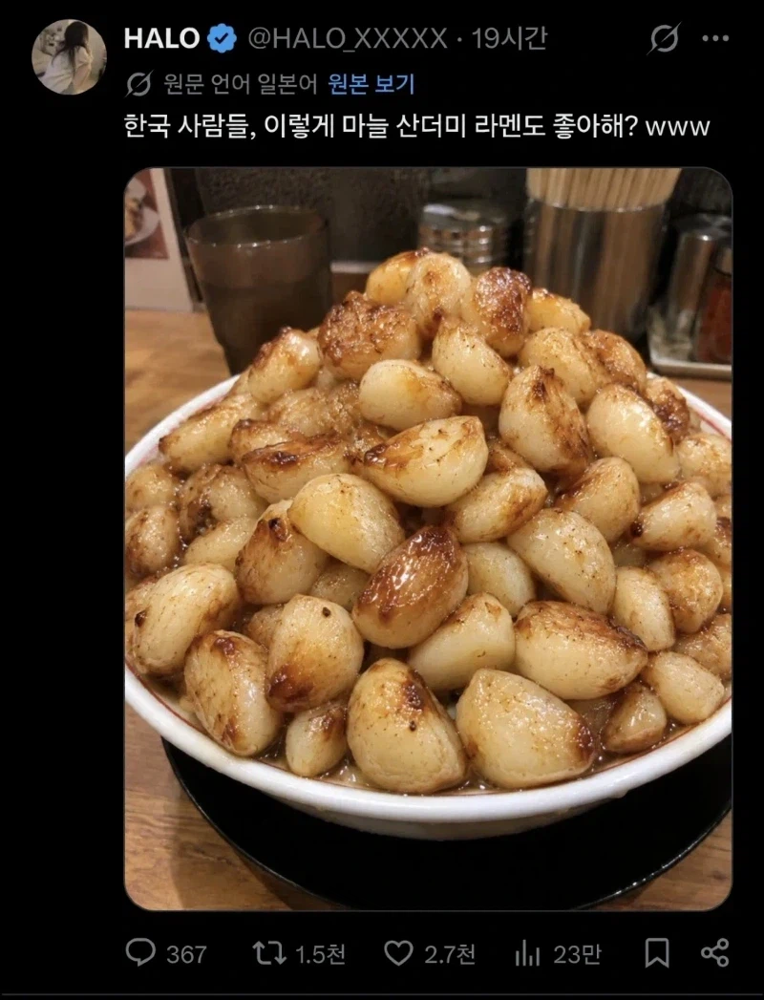

배불러서 다 못먹겠는데

배불러서 다 못먹겠는데
저렇게 먹으면 진짜 마늘폭탄방귀 나오더라...ㅋㅋㅋ
가능은 할 거 같은데 속은 좀 쓰릴듯
에반데
저정도면 먹고 다시 곰으로 변하겠다 열도놈들아 😂 ㅋㅋㅋ
근데 진짜 마늘 좋아하니 뭐니 해도 저렇게 쌓아놓고 먹는 사람이 있나?
고기랑 해서 먹어도 보통 많아도 열댓개 정도 먹지 않나?
국밥먹을때 생마늘 20개는 집어먹는거 같음
ㄷㄷ 한공기를 먹노
마늘냄새 몸에서 며칠올라옴?
그건 몰?루..
양파랑 청양만 주던데 생마늘도 괜찮네
저녁에 방구 뿡뿡 나오겠다
반찬으로 먹으면 다먹을거같은디
부족
밥반공기해서 반찬삼아 먹으면 가능
먹는건 상관없는데 냄새때문에 힘들듯
야 이건 많아도 너무많잖아
당뇨병 환자는 마늘도 못먹는다...저 맛있는걸 말야..ㅜㅜ
익힌거네 식은죽먹기
익힌거면 쌉가능
생으로도 고기먹을때 10개씩먹고 하는데 뭘...
아이씨
암만 가열해서 알리신이 파괴됐어도 저정도 먹으면 궤양있거나 수술 예정인 사람은 출혈 걱정해야겠는데
탄수화물 폭탄아니냐
저건 밥이랑 줘야 먹지 면이랑은 궁합이 안맞아
먹을 순 있는데 과해
설익은거같은데 다시 구워줘
고기 없이 마늘만 주는거야..?
방구 개많이 나와